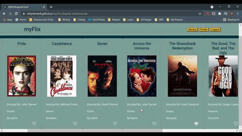

myFlix Angular

Overview
myFlix is a single-page, responsive movie app built with Angular, with routing and several interface views. The client-side developed in this project will support the existing server-side built earlier (Movie API) by facilitating user requests and rendering the response from the server-side via a number of different interface views.
Purpose & Context
Movie enthusiasts like to be able to access information about different movies, directors, and genres whenever they want. This app demonstrates my Angular skills and my ability to create straightforward documentation for other developers and team members
User Stories:As a user, I want to be able to receive information on movies, directors, and genres so that I can learn more about movies I've watched or am interested in.
As a user, I want to be able to create a profile so I can save data about my favorite movies.
Objective
Approach
Technologies: Node, Angular, Angular Material, Compodoc
Challenges
director image, delete account doesn't redirect, birthday not appearing, scrolling horizontally nav bar add search

Duration
Credits
Role: Lead developer
Tutor: Andrew Muscara
Mentor: Alexis Gormley
Beginning
Duration: Look into
Role: developer
Technologies Used:
User Stories:
As a user, I want to be able to receive information on movies, directors, and genres so that I can learn more about movies I've watched or am interested in.
As a user, I want to be able to create a profile so I can save data about my favorite movies.
Description:
myFlix is a single-page, responsive movie app built with Angular, with routing and several interface views. The client-side developed in this project will support the existing server-side
built earlier (Movie API) by facilitating user requests and rendering the response from the server-side via a number of different interface views.
What's the point?
Movie enthusiasts like to be able to access information about different movies, directors, and genres whenever they want. This app demonstrates my Angular skills and my ability to create straightforward documentation
for other developers and team members.
Beginning:
-Is it clear what problem you were trying to solve for the end-user? Duration, deadlines, methodologies and their role.